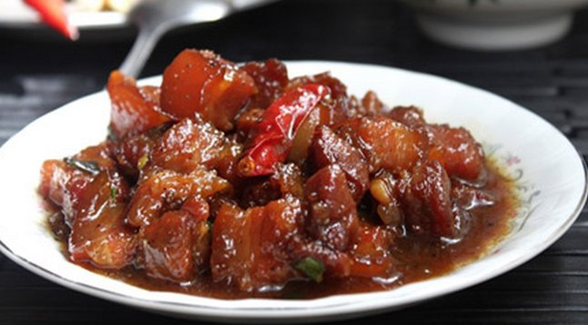

Ba rọi kho tiêu

- Khẩu phần 4
- Chuẩn bị 15 phút
- Thực hiện 15 phút
Nguyên liệu
- 300g thịt ba rọi, ít mỡ, cắt que
- 3 tép tỏi, bằm nhuyễn
- ¼ trái ớt sừng, cắt miếng mỏng
- 2 nhánh hành lá, cắt khúc vừa ăn
- 1 gói Gia Vị Hoàn Chỉnh - Thịt Kho
- ¼ muỗng cà phê tiêu xay
- 2 muỗng canh dầu ăn
- 2/3 chén nước lọc
Hướng dẫn thực hiện
- Ướp thịt ba rọi với tỏi bằm và gói Gia Vị Hoàn Chỉnh - Thịt Kho,
để 15 phút cho thịt thấm gia vị.
- Đun nóng dầu ăn, cho hỗn hợp thịt vào nồi, xào khoảng 5 phút cho thịt
săn lại
- Cho nước lọc vào nồi, giảm lửa nhỏ, kho khoảng 10 phút hoặc đến khi nước
sốt sệt lại là được, cho hành lá vào.
- Múc thịt ra đĩa, thêm chút tiêu xay cho thơm, trang trí với ớt cắt
khoanh, dùng nóng với cơm trắng